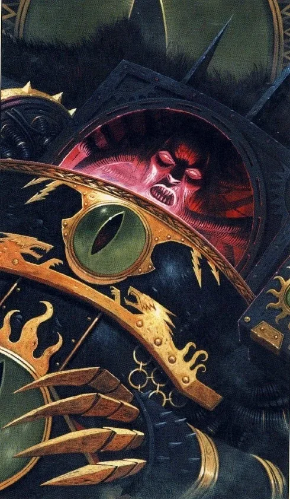
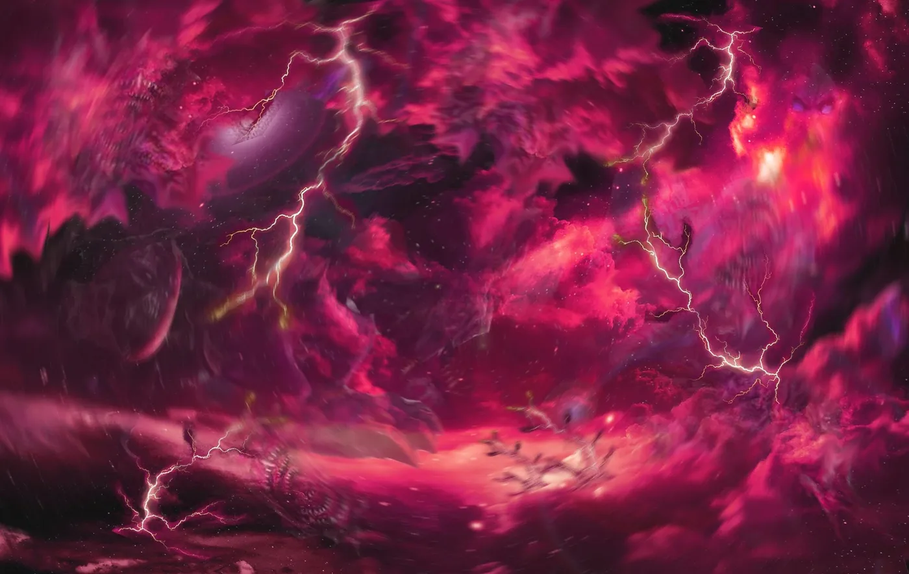
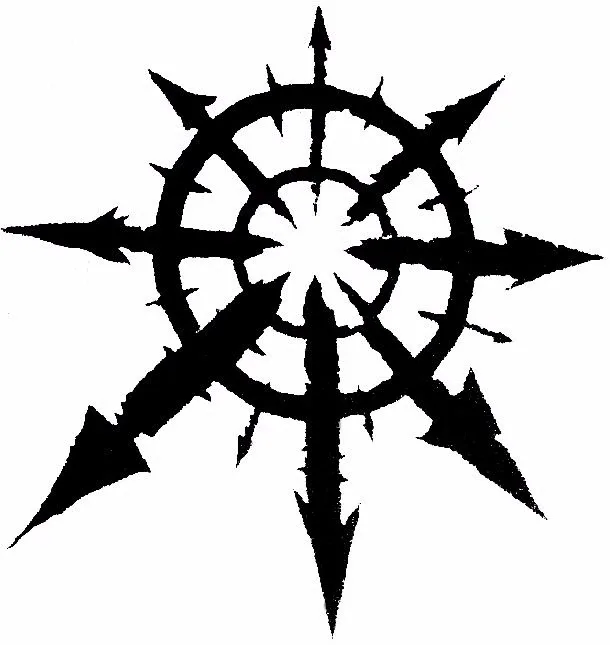
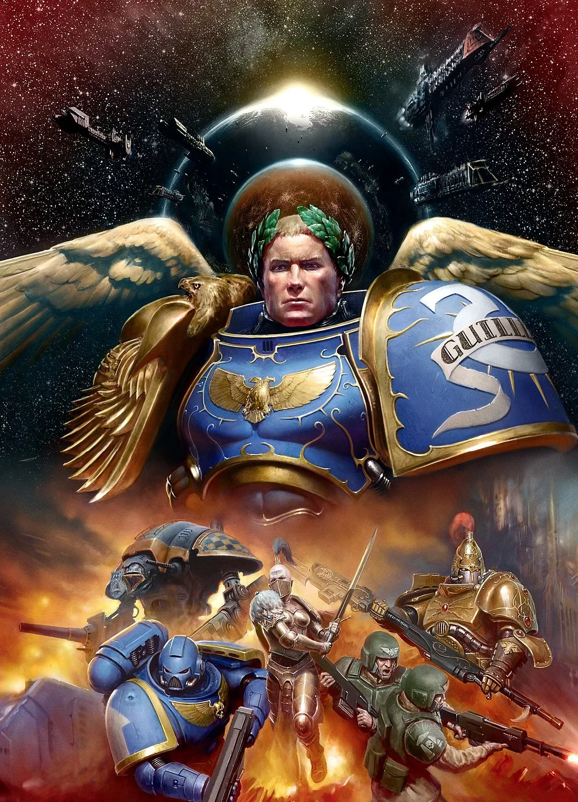
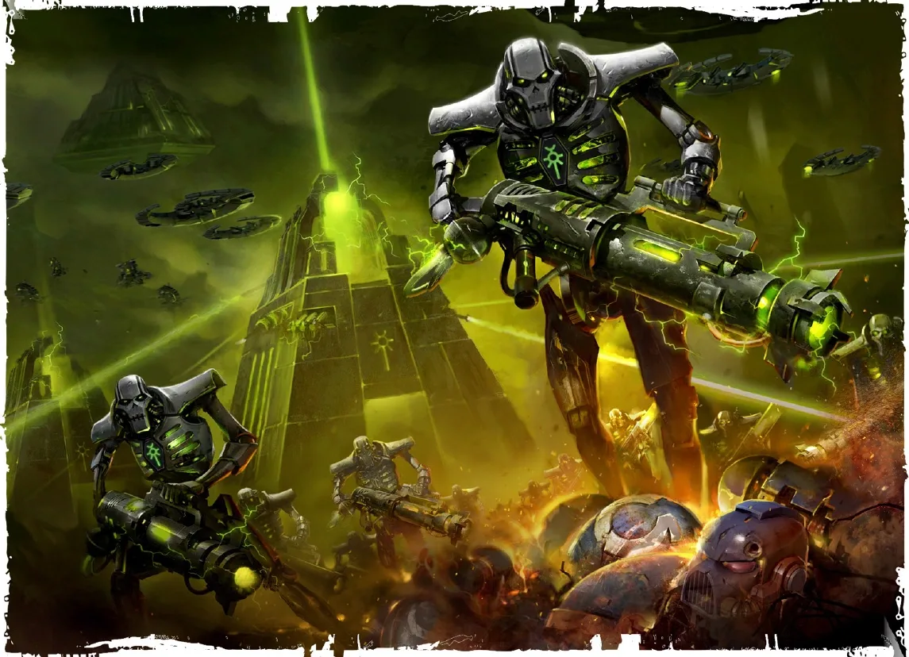
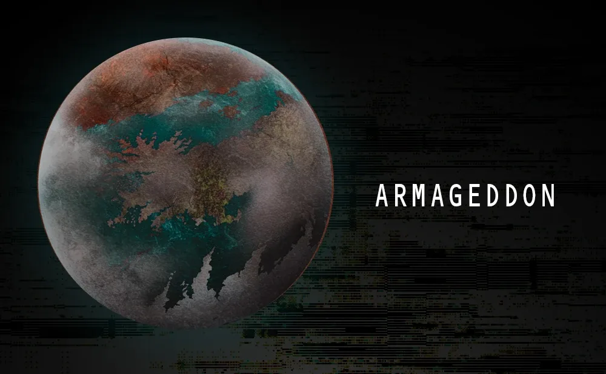
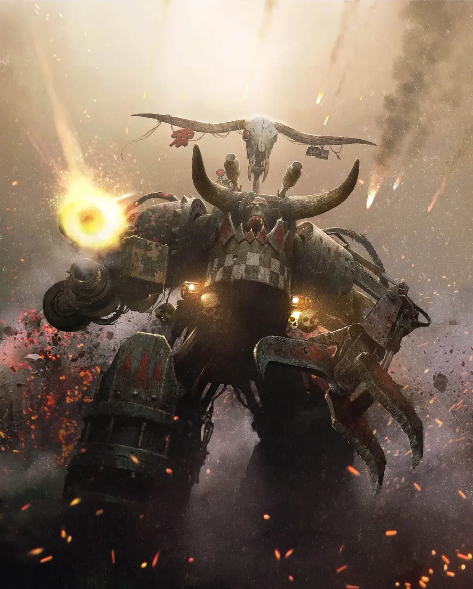

00สารบัญโลกของ 40K
หน้านี้คือสรุปย่อที่อ่านจบได้ใน 15 นาที ถ้าอยากรู้ลึกกว่านี้ เลือกอ่านต่อจากหัวข้อด้านล่าง (แนะนำให้อ่านตามลำดับ)
ยุคโบราณ
Old Ones, War in Heaven, ยุคทองของมนุษย์ และ Age of Strife
อ่านต่อเทพเจ้า
Chaos Gods, God-Emperor, เทพ Aeldari, C'tan และอื่น ๆ
อ่านต่อWarp และกลไกของจักรวาล
Navigator, Astropath, Psyker, Black Ships และ Great Rift
อ่านต่อจักรพรรดิ & Primarch
ชีวิตจักรพรรดิตั้งแต่กำเนิด และเรื่องราวของ Primarch ทั้ง 20 คน
อ่านต่อยุค 30K
Great Crusade และ Horus Heresy เรื่องราวของ 18 Legion สมัยยังภักดี
อ่านต่อยุค 40K
ไทม์ไลน์หมื่นปีหลัง Heresy จนถึงสงครามล่าสุด
อ่านต่อ30K vs 40K
ทุกอย่างที่เปลี่ยนไป พร้อมภาพเปรียบเทียบ
อ่านต่อเนื้อเรื่องรายทัพ
ต้นกำเนิด วีรกรรม ความสามารถพิเศษ และเนื้อเรื่องล่าสุดของ 47 ทัพ
อ่านต่อสารานุกรม: เจาะลึกทุกเรื่อง
บุคคลสำคัญ
110 ตัวละคร ค้นหาและกรองได้
อ่านต่อSpace Marine เจาะลึก
คัดคน อวัยวะ ชุดเกราะ Mark I–X และ Dreadnought
อ่านต่อลำดับยศทุกฝ่าย
ใครสั่งใครได้ และแต่ละตำแหน่งมีกี่คน
อ่านต่อเหรียญตราและเกียรติยศ
Crux Terminatus, Iron Halo, เหรียญทหาร
อ่านต่อแผนที่กาแล็กซี
กดดาวเพื่อดูผู้ครอบครองและเหตุการณ์
อ่านต่อองค์กรลับและกองกำลังพิเศษ
Inquisition, Assassins, Legion of the Damned
อ่านต่อนิยายที่ควรเริ่มอ่าน
16 เล่มพร้อมระดับภาษาอังกฤษ
อ่านต่อ01ภาพรวมในย่อหน้าเดียว

เรื่องเกิดในช่วงสหัสวรรษที่ 41–42 (ประมาณปี ค.ศ. 40,000 เป็นต้นไป) มนุษยชาติกระจายตัวอยู่ทั่วกาแล็กซีภายใต้ Imperium of Man (อิมพีเรียม ออฟ แมน) จักรวรรดิขนาดมหึมาที่ปกครองโดยความศรัทธาต่อ Emperor (เอ็มเพอเรอร์ — องค์จักรพรรดิ) ผู้ซึ่งร่างกายตายไปแล้วแต่จิตยังมีชีวิตอยู่บนบัลลังก์ทองคำมากว่าหมื่นปี จักรวรรดิถูกล้อมด้วยศัตรูรอบทิศ ทั้งมนุษย์ทรยศที่รับใช้เทพแห่งความโกลาหล (Chaos (เคออส)) และเผ่าพันธุ์ต่างดาว (Xenos (ซีนอส)) นับไม่ถ้วน ในโลกนี้ไม่มีฝ่ายไหนเป็น "คนดี" อย่างแท้จริง — มีแต่ฝ่ายที่พยายามเอาตัวรอด
"In the grim darkness of the far future, there is only war." — ในความมืดมิดอันโหดร้ายของอนาคตอันไกลโพ้น มีเพียงสงครามเท่านั้น คำว่า grimdark (กริมดาร์ก) ที่ใช้เรียกแนวเรื่องมืดหม่นสิ้นหวัง ก็มีที่มาจากประโยคนี้
02ไทม์ไลน์ประวัติศาสตร์
ในเนื้อเรื่องใช้ตัวย่อ "M" แทนสหัสวรรษ เช่น M41 = สหัสวรรษที่ 41 และ 999.M41 = ปีที่ 999 ของสหัสวรรษที่ 41
จักรพรรดิรวมโลก
หลังยุคมืด Age of Strife (เอจ ออฟ สไตรฟ์) ที่พายุในมิติ Warp ตัดขาดการเดินทางข้ามดวงดาว ชายลึกลับผู้มีพลังจิตมหาศาลที่ต่อมาถูกเรียกว่า "จักรพรรดิ" ได้รวมโลก (Terra) ด้วยสงคราม Unification Wars (ยูนิฟิเคชัน วอร์ส)
Great Crusade และ Primarch ทั้ง 20
จักรพรรดิสร้างลูกชายทางพันธุกรรม 20 คนเรียกว่า Primarch (ไพรมาร์ค) แต่ทารกทั้งหมดถูกพลังแห่ง Chaos พัดกระจายไปทั่วกาแล็กซี พระองค์จึงใช้พันธุกรรมของพวกเขาสร้างทหารยอดมนุษย์ Space Marines แบ่งเป็น 20 Legion (ลีเจียน — กองพล) แล้วออกทำ Great Crusade (เกรท ครูเสด) พิชิตกาแล็กซีคืน ระหว่างทางได้พบ Primarch ที่พลัดหลงทีละคน
Horus Heresy
Horus (ฮอรัส) Primarch ที่จักรพรรดิไว้ใจที่สุดและได้รับตำแหน่ง Warmaster (จอมทัพ) ถูกเทพแห่ง Chaos ล่อลวง แล้วนำ Legion ถึง 9 จาก 18 Legion ที่เหลือก่อกบฏ เรียกว่า Horus Heresy (ฮอรัส เฮเรซี — กบฏฮอรัส) สงครามกลางเมืองลุกลามไปทั่วกาแล็กซีจนถึงการปิดล้อมโลก (Siege of Terra)
จักรพรรดิขึ้นบัลลังก์ทองคำ
จักรพรรดิบุกขึ้นยานธงของ Horus และสังหารเขาได้ แต่ตัวเองก็บาดเจ็บปางตาย จึงถูกนำไปผนึกไว้บน Golden Throne (โกลเดน โธรน — บัลลังก์ทองคำ) เครื่องจักรโบราณที่ค้ำชีวิตพระองค์ไว้ตั้งแต่นั้นมา ฝ่ายทรยศหนีเข้าไปใน Eye of Terror (ดวงตาแห่งความหวาดกลัว) รอยแยกขนาดยักษ์สู่มิติ Warp
Codex Astartes และการแตก Legion
Roboute Guilliman (Primarch ของ Ultramarines) เขียนตำรา Codex Astartes (โคเด็กซ์ แอสตาร์ทีส) แบ่ง Legion ขนาดใหญ่ออกเป็น Chapter (แชปเตอร์) ละประมาณ 1,000 นาย เพื่อไม่ให้ใครมีกำลังมากพอจะก่อกบฏได้อีก
จักรวรรดิที่หยุดนิ่ง
จักรพรรดิที่นิ่งอยู่บนบัลลังก์ถูกยกย่องเป็นพระเจ้า จักรวรรดิกลายเป็นระบบราชการยักษ์ที่คลั่งศาสนา กลัวเทคโนโลยีใหม่ และพร้อมสังเวยดาวทั้งดวงเพื่ออยู่รอด ขณะที่ศัตรูใหม่ ๆ เช่น Tyranids, Necrons และ T'au ปรากฏขึ้น
Cadia ล่มสลาย และ Great Rift
Abaddon the Despoiler (อาบัดดอน) ผู้นำ Black Legion เปิดสงคราม Black Crusade ครั้งที่ 13 ทำลายดาวป้อมปราการ Cadia (คาเดีย) ส่งผลให้เกิดรอยแยก Warp ขนาดมหึมาพาดผ่านทั้งกาแล็กซี เรียกว่า Great Rift (เกรท ริฟต์) หรือ Cicatrix Maledictum แบ่งจักรวรรดิเป็นสองส่วน
Guilliman ฟื้นคืนชีพ
Roboute Guilliman ที่นอนสิ้นสติมาหมื่นปีถูกปลุกให้ฟื้น แล้วนำ Indomitus Crusade (อินโดมิทัส ครูเสด) ออกกอบกู้จักรวรรดิ พร้อม Space Marines รุ่นใหม่ที่แข็งแกร่งกว่าเดิมชื่อ Primaris (ไพรมาริส) ซึ่งสร้างโดยนักวิทยาศาสตร์ Belisarius Cawl ยุคนี้เรียกว่า Era Indomitus (ยุคอินโดมิทัส)
Orks บุก Armageddon อีกครั้ง
ขุนศึกออร์คในตำนาน Ghazghkull กลับมาบุกดาว Armageddon — อ่านต่อในหัวข้อ สงครามล่าสุด


ไทม์ไลน์แบบโต้ตอบ (36 เหตุการณ์) ยุค 30K แบบละเอียด ไทม์ไลน์ยุค 40K แบบละเอียด
03จักรวรรดิแห่งมนุษยชาติ (Imperium)

จักรวรรดิปกครองดาวนับล้านดวง มีศูนย์กลางอยู่ที่ Terra (โลก) บริหารโดยสภา High Lords of Terra ในนามของจักรพรรดิ สัญลักษณ์ของจักรวรรดิคือ Aquila (อควิลา) นกอินทรีสองหัว
ทำไมจักรพรรดิถึงสำคัญขนาดนั้น?
- พลังจิตของพระองค์ขับเคลื่อน Astronomican (แอสโตรโนมิคอน) "ประภาคาร" ทางจิตที่ช่วยให้ยานเดินทางผ่านมิติ Warp ได้ ถ้าไม่มี การเดินทางข้ามดวงดาวแทบเป็นไปไม่ได้
- พระองค์คอยป้องกัน Terra จากการบุกรุกของปีศาจ
- ประชาชนนับถือพระองค์เป็นพระเจ้าผ่านศาสนา Imperial Creed
กองกำลังหลักของจักรวรรดิ
04Warp และเทพแห่ง Chaos

Warp (วาร์ป) หรือ Immaterium คือมิติคู่ขนานที่ประกอบด้วยพลังงานจากอารมณ์ความรู้สึกของสิ่งมีชีวิตทั้งหมด ใช้เป็นทางลัดเดินทางข้ามอวกาศ และเป็นแหล่งพลังของ Psyker (ไซเกอร์ — ผู้มีพลังจิต) แต่ก็เป็นที่อยู่ของปีศาจ (Daemon (ดีมอน)) และเทพเจ้าแห่ง Chaos ทั้งสี่ที่ก่อตัวจากอารมณ์ของสิ่งมีชีวิต:
| เทพ | คำอ่าน | ตัวแทนของ | สาวกที่โดดเด่นในเกม |
|---|---|---|---|
| Khorne | คอร์น | ความโกรธ เลือด การเข่นฆ่า | World Eaters |
| Nurgle | เนอร์เกิล | โรคภัย ความเสื่อมสลาย (แต่ก็คือความอดทนต่อความสิ้นหวัง) | Death Guard |
| Tzeentch | ซีนช์ | การเปลี่ยนแปลง แผนการ เวทมนตร์ | Thousand Sons |
| Slaanesh | สลาเนช | ความหลงใหล ความสมบูรณ์แบบ ความเกินพอดี | Emperor's Children |
ผู้ที่ไม่ได้บูชาเทพองค์ใดองค์หนึ่งแต่บูชาทั้งหมดรวมกันเรียกว่า Chaos Undivided (เคออส อันดีไวเด็ด) เช่น Black Legion ของ Abaddon


05Primarch และ Legion: ใครภักดี ใครทรยศ
ในยุค Horus Heresy มี Legion ที่ยังเหลืออยู่ 18 Legion (อีก 2 Legion คือ II และ XI ถูกลบออกจากบันทึกและไม่มีใครรู้ชะตากรรม) แบ่งเป็นสองฝ่ายเท่ากัน:
- I — Dark Angels (Lion El'Jonson)
- V — White Scars (Jaghatai Khan)
- VI — Space Wolves (Leman Russ)
- VII — Imperial Fists (Rogal Dorn)
- IX — Blood Angels (Sanguinius)
- X — Iron Hands (Ferrus Manus)
- XIII — Ultramarines (Roboute Guilliman)
- XVIII — Salamanders (Vulkan)
- XIX — Raven Guard (Corvus Corax)
- III — Emperor's Children (Fulgrim)
- IV — Iron Warriors (Perturabo)
- VIII — Night Lords (Konrad Curze)
- XII — World Eaters (Angron)
- XIV — Death Guard (Mortarion)
- XV — Thousand Sons (Magnus the Red)
- XVI — Sons of Horus (Horus) → ภายหลังคือ Black Legion
- XVII — Word Bearers (Lorgar)
- XX — Alpha Legion (Alpharius Omegon)
ชื่อเหล่านี้คือที่มาของทัพในเกมหลายทัพ เช่น Chapter ย่อยของ Space Marines (Blood Angels, Dark Angels, Space Wolves) และทัพของ Chaos (Death Guard, Thousand Sons, World Eaters, Emperor's Children) ในยุคปัจจุบัน Primarch ฝ่ายภักดีที่กลับมามีบทบาทแล้วคือ Roboute Guilliman และ Lion El'Jonson ส่วน Primarch ฝ่ายทรยศบางคนกลายเป็น Daemon Primarch (ปีศาจกึ่งเทพ)
06ยุคปัจจุบัน: กาแล็กซีที่ถูกฉีกเป็นสองส่วน

Great Rift แบ่งจักรวรรดิเป็น:
- Imperium Sanctus (อิมพีเรียม แซงตัส) — ฝั่งที่ยังมองเห็นแสงของ Astronomican และติดต่อกับ Terra ได้
- Imperium Nihilus (อิมพีเรียม นิฮิลัส) — ฝั่งที่ถูกตัดขาดในความมืด ต้องเอาตัวรอดกันเอง


07ภัยจากต่างดาว (Xenos)
Aeldari & Drukhari
เผ่าพันธุ์โบราณคล้ายเอลฟ์ที่เคยครองกาแล็กซี อาณาจักรล่มสลายเพราะการกำเนิดของเทพ Slaanesh ปัจจุบันกระจายเป็นหลายกลุ่ม
Orks
เผ่าพันธุ์นักรบสีเขียวที่มีชีวิตอยู่เพื่อการต่อสู้ ยิ่งมีจำนวนมากและเชื่อร่วมกันมาก เทคโนโลยีก็ยิ่งใช้ได้ผล
Necrons
อารยธรรมโบราณที่ย้ายจิตไปอยู่ในร่างโลหะ หลับใหลมาหกสิบล้านปีและกำลังตื่นขึ้นเพื่อทวงคืนกาแล็กซี
Tyranids
ฝูงสิ่งมีชีวิตจากนอกกาแล็กซีที่กลืนกินชีวมวลของดาวทั้งดวง ควบคุมโดยจิตรวมหมู่ Hive Mind
T'au Empire
อาณาจักรหนุ่มที่มีเทคโนโลยีล้ำ เชื่อใน "Greater Good" (ประโยชน์ส่วนรวม) และพร้อมรับเผ่าพันธุ์อื่นเข้าร่วม
Leagues of Votann
คนแคระอวกาศจากใจกลางกาแล็กซี ทำสงครามเหมือนทำธุรกิจ และไม่เคยลืมความแค้น

อ่านเนื้อเรื่องเต็มของแต่ละเผ่าได้ที่ เนื้อเรื่องรายทัพ และสไตล์การเล่นได้ที่หน้า ทัพทั้งหมด
08สงครามล่าสุด: Armageddon (เนื้อเรื่องของ 11th Edition)

Armageddon (อาร์มาเก็ดดอน) เป็นดาวอุตสาหกรรมสำคัญที่ถูกรุกรานมาแล้วหลายครั้ง: ครั้งแรกโดย Angron และปีศาจของ Khorne ครั้งที่สองและสามโดยขุนศึกออร์ค Ghazghkull Mag Uruk Thraka (แกซกูล แม็ก อูรุก แธรกา) ผู้ที่ศัตรูคู่แค้นตลอดกาลของเขาคือ Commissar Yarrick นายทหารชราแห่งจักรวรรดิ
การกลับมาของ Ghazghkull
ในเนื้อเรื่องล่าสุด Orks ใช้อุปกรณ์เทเลพอร์ตขนาดมหึมาชื่อ mega-tellyshokka ที่สามารถ "ย้าย" ดาวทั้งดวงได้ — ดาวน้ำแข็ง Chosin ในระบบดาว Armageddon หายไปเฉย ๆ จากนั้นกองเรือออร์คทั้งกองก็โผล่เหนือดาว Armageddon และบุกลงมาอย่างรวดเร็ว จนเมืองรังผึ้ง (Hive city) ต้องถูกปิดล้อม
Operation Imperator
Marneus Calgar ผู้นำ Ultramarines รวบรวมกองกำลังจากหลาย Chapter เช่น Blood Angels, Black Templars, Salamanders, White Scars, Space Wolves และอื่น ๆ เพื่อปลดปล่อยดาว ในปฏิบัติการชื่อ Operation Imperator ผลคือสงครามแบบผลัดกันแพ้ชนะ: ฝ่ายจักรวรรดิรักษาบางเมืองไว้ได้ แต่ Orks ยึดเมืองรังผึ้งอย่าง Acheron และ Tempestora ไว้ได้ และสงครามยังคงดำเนินอยู่


นี่คือเหตุผลที่กล่องเปิดตัวรุ่น 11th คือ Blood Angels ปะทะ Orks และชุดเริ่มต้นทุกกล่องเป็น Space Marines กับ Orks · แฟน ๆ ยังนับลำดับ "สงครามครั้งที่เท่าไร" ของ Armageddon ไม่ตรงกันนัก
09อยากรู้มากกว่านี้ อ่านอะไรต่อ?
- Black Library — สำนักพิมพ์นิยายของ Warhammer นิยายชุด The Horus Heresy เริ่มจากเล่ม Horus Rising (Dan Abnett) เล่าการทรยศของ Horus แบบละเอียด
- Eisenhorn (Dan Abnett) — นิยายสืบสวนของนักสืบ Inquisition เหมาะกับคนอยากเห็นชีวิตในจักรวรรดิ
- Codex ของทัพที่คุณเล่น — ครึ่งเล่มคือเนื้อเรื่อง ประวัติ และภาพประกอบของทัพนั้น
- Combat Patrol Companion — หนังสือแนะนำโลก 40K สำหรับมือใหม่ที่ออกคู่กับ 11th Edition มีสรุปสมรภูมิสำคัญในปัจจุบัน